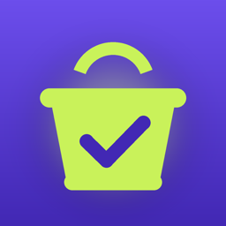

GoodCart
A grocery scanner for US shoppers. Scan a barcode, get a Fit Score made for you, check allergies for the whole family and find better swaps. No account. Your health data stays on your iPhone.
What you can do
- Scan and understand: a 0–10 Fit Score with what holds a product back and what works in its favor, nutrition, ingredients and additive notes.
- Made for you: goals, diets and the 9 major US allergens.
- Better swaps: higher-scoring products from the same aisle, and grocery stores nearby.
- Ask privately: questions about ingredients and labels, answered on your iPhone.
- Stay on track: streaks, weekly goals, a Sunday recap, a shopping list, widgets and a Live Activity while you shop.
Free with ads. GoodCart Plus adds family profiles, every swap and a swap of the day, your avoid list, 4-week trends and full history, and removes all ads: $2.99/month, $14.99/year with a 7-day free trial, or $39.99 once.
Common questions
Where is my data?
On your iPhone, in the app's private storage. There's no account and no GoodCart server. Barcodes and searches go to Open Food Facts to look up products, without your profile.
Do ads or analytics see my allergies or what I scan?
No. Ads come from Google AdMob and usage analytics from Firebase. Neither receives your profile, family, allergies, avoid list, products or assistant questions. Turn analytics off at Profile › Privacy › Share usage data.
How do I change ad choices?
Profile › Privacy › Ad privacy choices in GoodCart (where the law requires it).
How do I remove ads?
Get GoodCart Plus from Profile. Already bought it on another iPhone? Tap Restore purchases on the Plus screen.
A product is missing or wrong.
Product data comes from Open Food Facts. For a missing product, tap Snap the label to score it from the Nutrition Facts panel. Always check the package if you have an allergy.
Reminders don't arrive.
Check iPhone Settings › Notifications › GoodCart is on, then open GoodCart once so it can reschedule.
How do I cancel Plus?
iPhone Settings › your name › Subscriptions › GoodCart, at least 24 hours before the period ends.
GoodCart gives general nutrition information and is not medical advice. Product data © Open Food Facts contributors, available under the Open Database License.